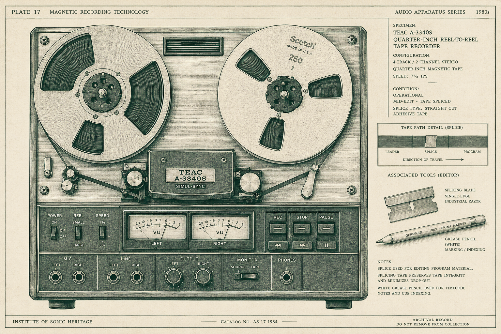
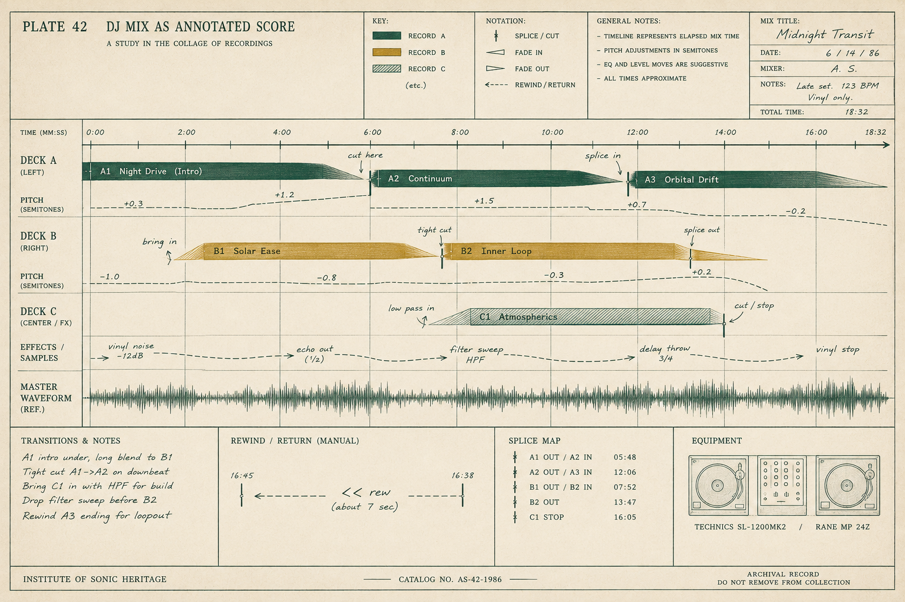
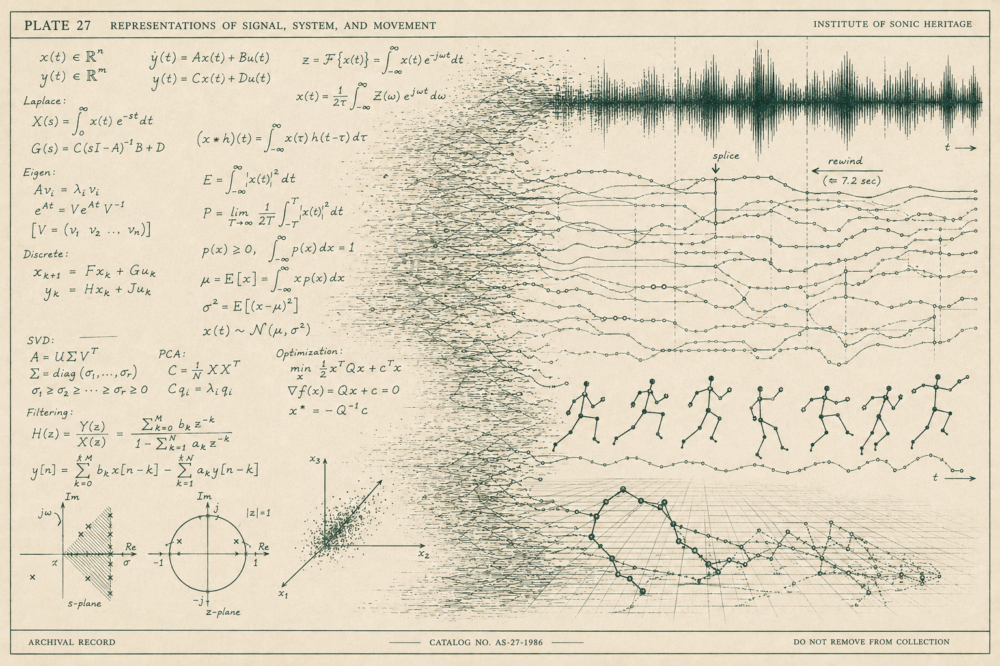

Essay · LMM Technologies
Ron Hardy Doesn’t Prompt in Text

The Chosen Few Picnic was last week — a celebration of house music, the thing Chicago gave the world — and it got me thinking about Ron Hardy. Hardy was the resident DJ at the Music Box — the underground, if you were there — while Frankie Knuckles played smooth and soulful across town at the Power Plant. Ronnie was the other pole: raw, loud, relentless, a signature sound you knew in eight bars. He is dead now, and the room he played cannot be reconstructed. What survives are records he played, which anyone can buy, and audience tapes, which sound like they were recorded inside a kick drum. The records were never the work. Hardy pitched them up until Stevie Wonder ran at +8, rode the EQ until a bassline stood alone in the room, played tracks twice, played them backward, cut his own edits on reel-to-reel so that the version filling the room — his “I Can’t Turn Around,” his “Love Is the Message” — existed nowhere else on earth. The records were raw material. The work was what he did to them.
So here is an idea I couldn’t shake. Train a model on every record Hardy played. Then prompt it — not with a sentence, not with “play it dark and relentless,” but with a Hardy mix itself. The mix is the prompt. And the model returns a mix: his selections, his pitch, his edits, his sequence — that Ronnie Hardy sound. Native data in, native data out, no words anywhere in the loop.
Am I asking too much?

Yes — and the way it fails is more useful than the idea itself.
An audio-to-audio model trained on those records and prompted with a tape would give you house-flavored texture hallucinating records that don’t exist. Because the audio was never the work. The work was a decision sequence over a catalog: which record, entered where, at what pitch, blended how, cut when, rewound why. A mix is the render of that sequence. Train on renders and you learn the surface. The generative object — the thing Hardy was actually authoring, four hundred decisions a night — is a symbolic layer. And here is the part worth slowing down for: that symbolic layer is not language. It’s not audio and it’s not English. It’s a third kind of thing.
Most of what I want to say follows from taking that seriously. But first, a detour through arithmetic.

When a large language model answers a math problem, it is not calculating. There is no adder in there, no carry bit, nothing a calculator would recognize. The model is doing the only thing it ever does — statistical continuation over symbols — and it happens that predicting math text badly is expensive, so training pressure forced it to grow internal circuits that approximate arithmetic: rough-magnitude heuristics running in parallel with last-digit bookkeeping, converging on the right token most of the time. It knows the notation of mathematics, and prediction has forced it to partially reconstruct the thing the notation refers to. Partially. The reconstruction is an accident of the objective, and it is exactly as good as the text demanded and no better.
Hold that thought, because it generalizes to everything.
The dominant pattern in machine learning right now is what you could call text-hub multimodality. Images, audio, video, sensor streams — all of it projected into a language model’s latent space, with text as the interlingua and the caption as the steering wheel. You describe what you want and the model renders it. This buys something real: compositional instruction, the ability to ask for a cat in a spacesuit in watercolor. But it charges a tax, and the tax is everything language describes poorly. Micro-timing. Energy contour. The signature of a gait. The texture of order flow in the last forty seconds before a number prints. “Play it like Ron Hardy” is a caption. The mix is the specification. Everything between the caption and the specification is lost at the interface, and no amount of scale recovers it, because it was never in the words.
There is another pattern, older and quieter: the modality closed on itself. Motion in, motion out. Market state in, next market state out. Weather in, weather out. The prompt is a sample from the same distribution as the answer, and the task is implicit — continue, forecast, transform. Nothing is described. The prompt demonstrates. Few-shot prompting turns out not to be a property of language at all; it is a property of sequence models, and the tokens don’t have to be words.
I build these. One model trained on human motion — joint positions streaming off video — prompted with motion, forecasting motion. Another trained on market data, running live against the stream it was trained on. In neither loop does a caption appear. And the difference from the text-hub world is not cosmetic. A model trained on descriptions of motion knows the language of motion, the way the LLM knows the notation of arithmetic — a partial reconstruction, exactly as faithful as the text demanded. A model trained on motion has no notation to hide behind. Prediction fails unless the representation carries the dynamics. Text models know about domains. Native models know domains, because nothing less survives the objective.
Which brings back Hardy, and why the failure of the naive version matters.
The Hardy problem isn’t solved by going native, because the native stream — the audio — sits below the work. And it isn’t solved by going linguistic, because no caption carries a night at the Music Box. It’s solved, if it’s solvable, by a spine and a handle: a model over the decision layer — the selections, the in-points, the pitch moves, the edits, transcribed off every surviving tape — rendering through the real records. Native audio at the bottom, a symbolic control plane on top, and the control plane is not language. It’s closer to a score. Or a strategy.
I think that’s the shape of the most interesting systems coming: native spines, so the representation is forced to be faithful, with symbolic handles that fit the domain instead of flattening it into vocabulary. Steering a model the way Hardy steered the room — not by describing what you want, but with the thing itself.
That is the whole company, stated once:
We build models that know the domain, not the words about the domain.